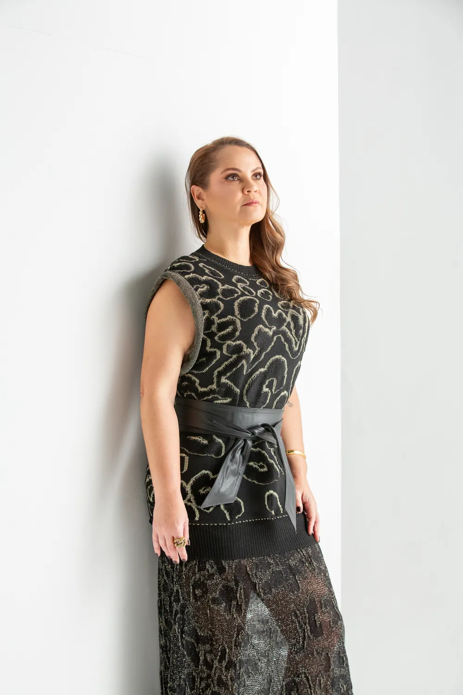
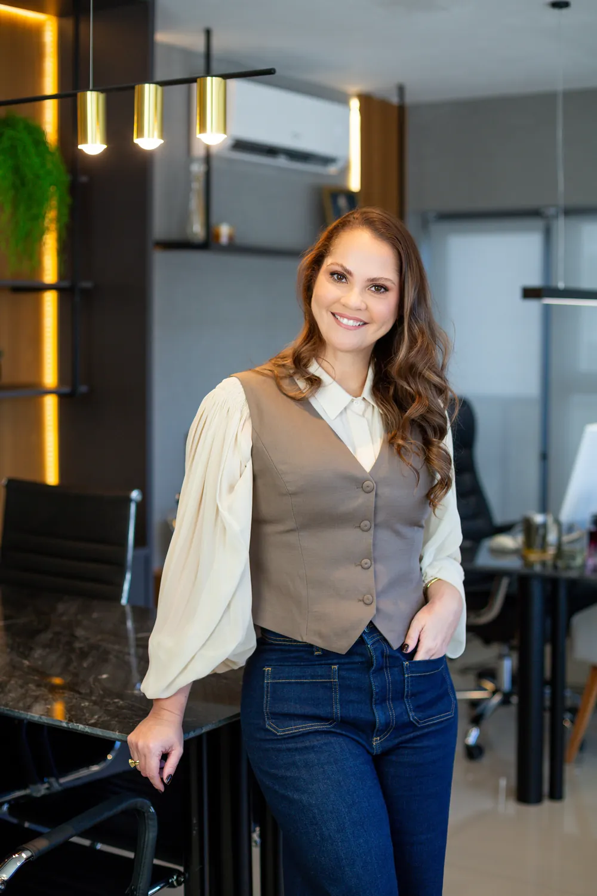

Reajuste abusivo de plano de saúde
Contestação de aumentos aplicados sem justificativa clara ou acima dos índices autorizados pela ANS, com análise sigilosa da sua situação.
Falar sobre meu casoAdvocacia especializada · Direito Médico e da Saúde
Defesa de pacientes diante de práticas abusivas de planos de saúde e assessoria jurídica para médicos e clínicas.
Por que a escolha certa importa
O escritório Lícia Santos é referência em Direito à Saúde, com atuação pautada pela análise cuidadosa de cada caso, pela transparência na comunicação e pelo compromisso com resultados concretos.
Atuação focada em Direito Médico e da Saúde para quem precisa de cobertura e para quem cuida de pacientes. Escolha o seu caso e fale diretamente pelo WhatsApp.
Contestação de aumentos aplicados sem justificativa clara ou acima dos índices autorizados pela ANS, com análise sigilosa da sua situação.
Falar sobre meu casoAção contra recusas indevidas de procedimentos, exames, cirurgias e tratamentos previstos em contrato.
Falar sobre meu casoPlanos vendidos como coletivos que funcionam como individuais para escapar do controle de reajuste da ANS.
Falar sobre meu casoRecuperação de valores glosados por operadoras junto a médicos, clínicas e hospitais.
Falar sobre meu casoSuporte jurídico preventivo e defesa profissional para quem atua na área da saúde.
Falar sobre meu casoOrientação e ação para garantir o acesso a tratamentos e o cumprimento dos contratos de saúde.
Sobre o escritório
Com mais de 10 anos de atuação, o escritório Lícia Santos defende pacientes e consumidores que enfrentam práticas abusivas de planos de saúde e apoia médicos e clínicas na proteção de seus direitos.
Cada situação é única e merece atenção individualizada, com análise cuidadosa, transparência e sigilo em todas as etapas.
Experiências reais
“Profissional super dedicada, atenciosa e nos ajudou muito no processo de nossa filha. Agradeço demais sua atenção, Dra Licia.”G Avaliação no Google
“Excelente atendimento. É daqueles escritórios que realmente se importam com os clientes. Não é a toa que são chamados de boutique. Nos fazem sentir que o nosso caso não é só mais um.”G Avaliação no Google
“Profissional dedicada, atendimento acolhedor e conhecimento técnico, fazem eu ficar muita tranquila com minha escolha.”G Avaliação no Google
“Simplesmente maravilhosa! Atenciosa, ética, comprometida, atenta, conhecedora, competente, antenada as novidades, atualiza-se corriqieiramente.”G Avaliação no Google
“Dra. Licia é uma profissional humana em seu atendimento e de extrema confiança.”G Avaliação no Google
“Excelente atendimento, profissional que passa segurança.”G Avaliação no Google
Como funciona
Um caminho simples e sigiloso para entender sua situação e decidir com segurança.
Você conta sua situação e recebe uma avaliação inicial e sigilosa, sem compromisso.
Definimos juntos o melhor caminho, com clareza sobre prazos, riscos e possibilidades.
Conduzimos o processo do início ao fim, com atualização constante sobre cada avanço.


O falso coletivo ocorre quando um plano é vendido como coletivo, mas funciona como individual, o que pode permitir reajustes sem o controle da ANS.
Seu contrato é classificado como coletivo, mas você contratou de forma individual ou familiar.
Os reajustes aplicados são expressivos e recorrentes, sem justificativa clara.
O vínculo com a entidade de classe ou associação parece ser apenas formal.
Você não participou de nenhuma negociação coletiva sobre os reajustes.
A operadora aplica índices muito acima dos autorizados pela ANS para planos individuais.
Há dificuldade em obter informações claras sobre a composição do reajuste.